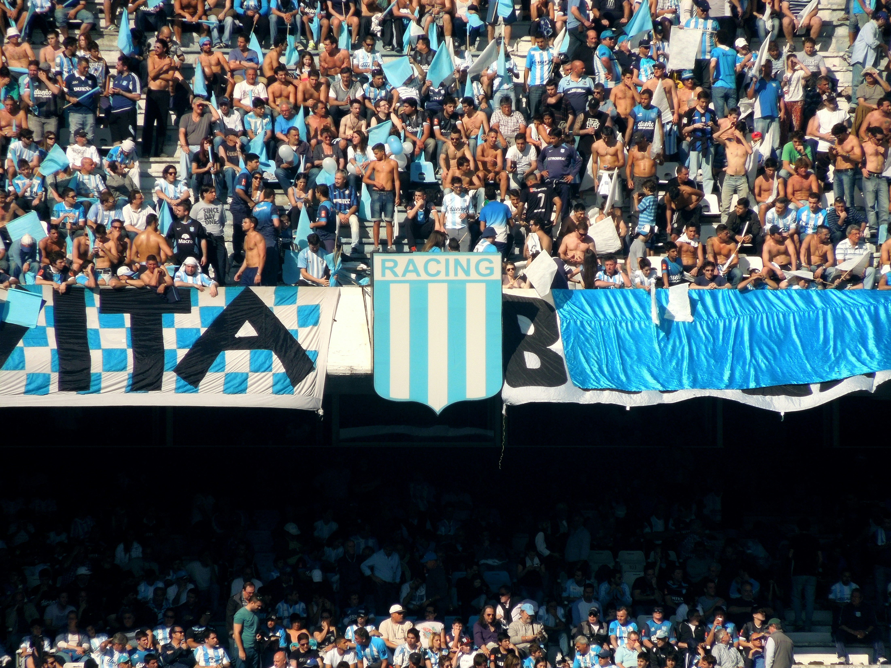

Destacado
Novedades
Liga Profesional Argentina Apertura
Racing ganó y se clasificó a octavos de final. La Academia perdía 1-0 y jugaba mal, pero lo dio vuelta con goles de Maxi Salas y el ingresado Martirena. Así, con el 2-1, se metió en los Playoffs.